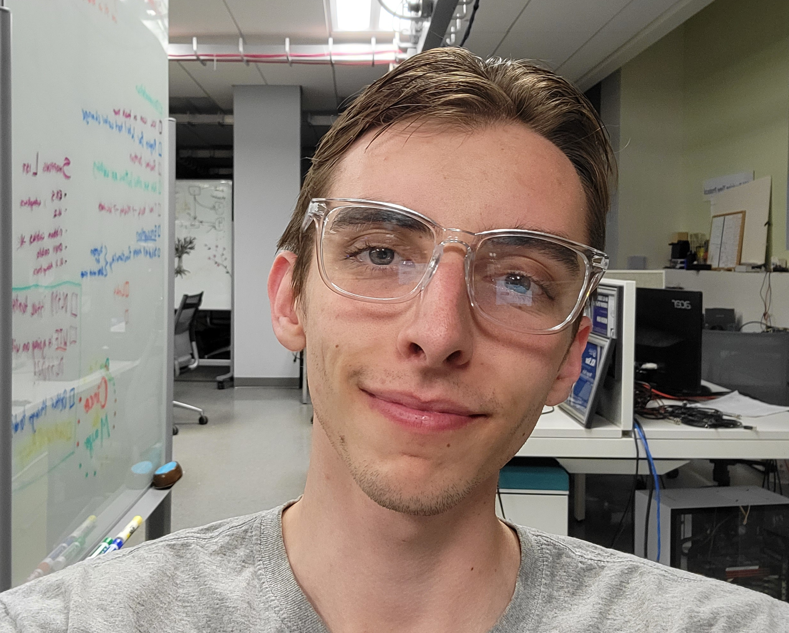
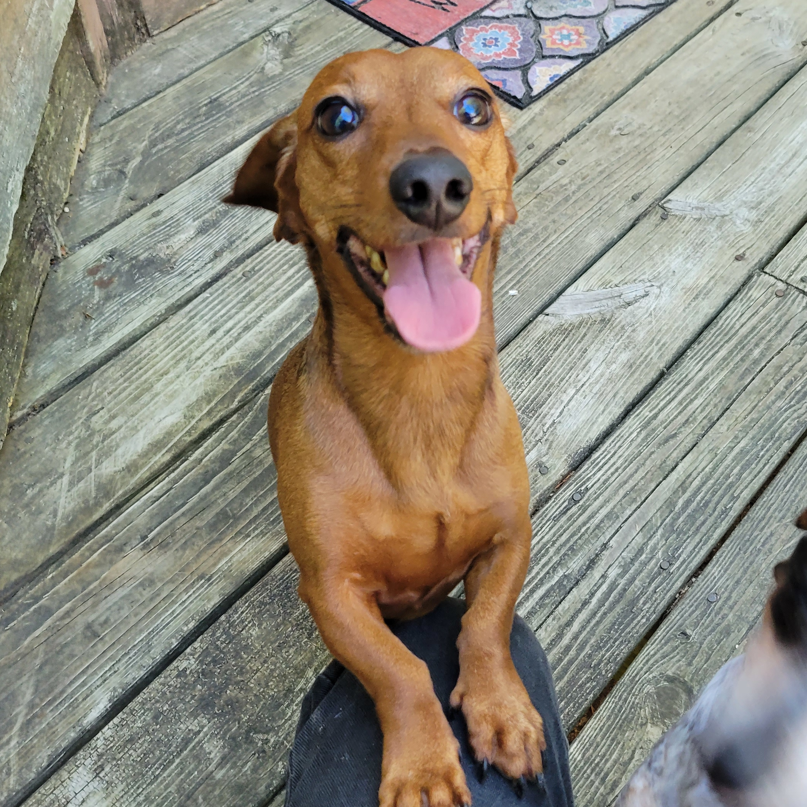

About Me

One of my greatest joys in life is solving technical problems. A former librarian
and Datacenter lab technician for the University of New Hampshire's
'InterOperability Laboratory', I excel in
strong teamwork oriented programming/debugging environments. I enjoy digging into
complex issues and collaborating with others (or working solo utilizing the
'rubber ducky' technique)
to get the job done, and done right™. I have a tendancy to give more weight to
supportable and correct code over rushing for a solution and calling it good.

When I am not feverishly coding, I enjoy oil painting with my little German companion, Lincoln,
as well as partaking in as many strange hobbies and side activities as I can get my hands on!
If you want to get to know more about me:
CLICK HERE!
TAP HERE!